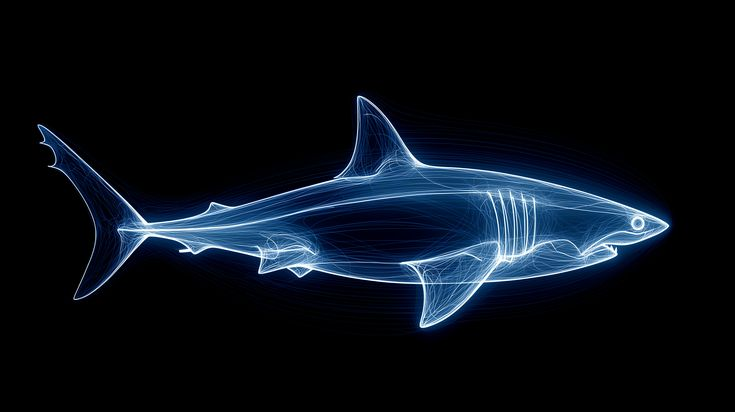
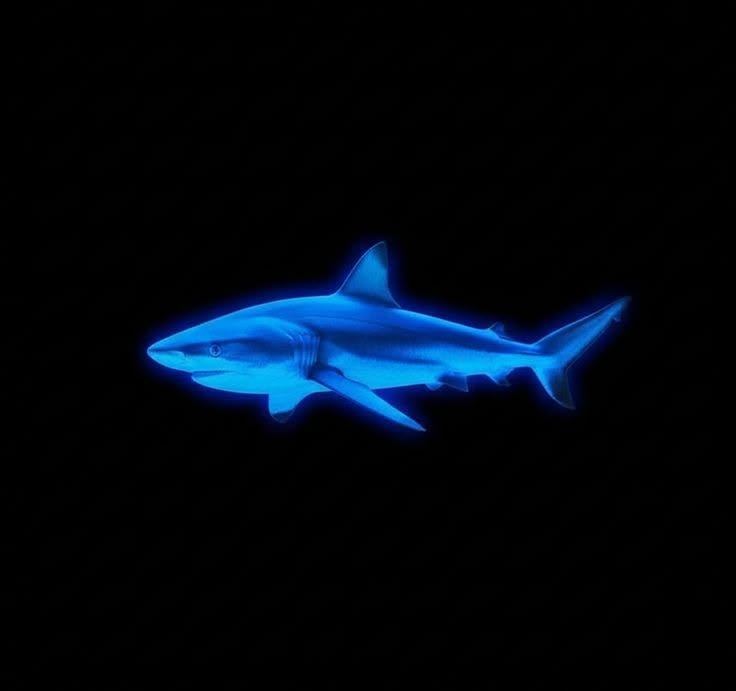

Generale informatie
Haaien zijn een van de oudste diersoorten op aarde. Zij bestaan al
ongeveer 400 miljoen jaren, dat is zelfs ouder dan dinosaurussen! Zij
hebben een zeer goed geheugen, en zelfs probleem-oplossende
vaardigheden. Dus slimme dieren ook. Zij zijn een heel belangrijk
onderdeel van het mariene ecosysteem en zorgen voor de balans en
gezondheid van de oceanen.

Haaien worden vaak verkeerd begrepen door de mens. Wij zien de
haaienfilms en denken vaak dat zij agressieve jagers zijn, die bij
elke kans die ze krijgen graag een mens op het menu hebben staan. Maar
dat is helemaal niet zo. Per jaar sterven gemiddeld 10 personen aan
een haaienaanval, in vergelijking tot 100 miljoen haaien die elk jaar
sterven door de mens. Wie vormt dus de echte bedreiging? Haaien zijn
inderdaad een bedreigde diersoort, en dat komt door de mens. Hoe
kunnen wij deze bedreiging tegengaan? Hoe lossen wij het op?
Haaien als bedreigde diersoort.
Hoewel haaien al 400 miljoen jaar overleefd hebben, zijn zij inderdaad
een bedreigde diersoort. Dit is een probleem dat begon in de jaren 70,
met de opkomst van grootschalige visserij. Hun vinnen worder gebruikt
voor soep en medicijnen. Hierdoor jaagt de mens veel op haaien, en
planten de dieren zich niet snel voort, dus de aantallen verminderen
snel. Inmiddels is de haaien populatie afgenomen met ruim 70%.

Wat zijn de gevolgen?
Haaien zijn cruciaal voor de gezondheid van de oceaan. Deze roofdieren
zijn aan de top van de voedselketen in het mariene ecosysteem en
houden de balans. Zij voeden zich met zwakke of zieke diere en
voorkomen dat bepaalde vispopulaties te groot worden en het ecosysteem
overbelasten. Doordat haaien jachten, blijven de prooidieren sterk en
alert.
Haaien beschermen verder ook nog leefgebieden. Zij zorgen ervoor dat
grazende dieren niet te lang op dezelfde plaats, vooral kwetsbare
gebieden zoals koraalriffen of zeegrasvelden, alles opeten. Zeegras is
heel effectief in het opslaan van C02 via fotosynthese, dit gebeurt 35
keer sneller dan een tropisch regenwoud.
Hoe kunnen wij ze beschermen?
Wij kunnen de haaien beschermen door een eind te brengen aan
overbevissing, geen haaienproducten te kopen en bewustwording te
verspreiden. Ik kom niet vaak iemand tegen die haaienvinnensoep eet,
maar dat is ook een van de dingen die wij juist niet moeten doen.
Controleer verder of er geen dierlijke producten zitten in cosmetica /
verzorgingsproducten. Je kunt ook ervoor zorgen dat jij de strand
schoon achterlaat en vrij van plastic dat in de zee terecht kan komen.
Als jij je houdt aan deze simpele stappen kunnen wij het samen
oplossen!
Verschillende soorten
Er bestaan tussen de 400 en 500 bekende haaisoorten op aarde. Het
exact aantal weten wij eigenlijk niet. Maar elk jaar wordt er nog ten
minste 1 nieuwe haaisoort ontdekt!
Alle soorten zijn verdeeld in 12 verschillende orden, waarvan 4 zijn
uitgestorven.
Nu hebben wij nog de Grondhaaien, Varkenshaaien, Grauwe haaien,
Makreelhaaien, Bakerhaaien, Zaaghaaien, Doornhaaiachtigen en de
Zee-engelen. Wil jij meer weten over de verschillende soorten klik
maar hier!
Klik hier om te zien hoe diep de verschillende haaien kunnen zwemmen.
Depthometer